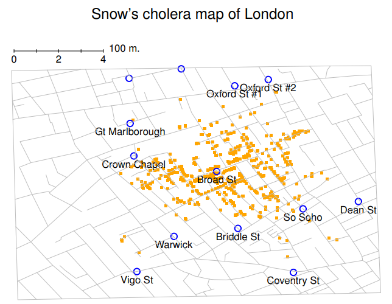
5 繪製統計圖
Above all else show the data.
– Edward Tufte1
資料視覺化是資料分析最重要的工作之一，主要有兩個原因。首先，繪製報告用圖表是資料分析要達成的具體目標。以簡潔吸睛的方式呈現資料，能讓你的讀者及觀眾輕鬆理解你想說的資料故事。另一個也許更重要的原因是繪製統計圖能幫助同學們更理解資料。也就是說，處理資料前先繪製”探索用統計圖”，能讓你了掌握合適的分析方法。這兩點簡單易懂，不過很多人經常忘了資料視覺化的重要性與好處。
為了讓同學感受資料視覺化的重要性，我們來看一個統計圖立大功的真實案例： Figure 5.1 是重製歷史上知名的資料視覺化作品，原作是約翰·斯諾繪製的1854年倫敦蘇活區霍亂死者分佈地圖。背景的街道地圖引導觀者視線，前景有許多橙色小點，每個小點代表得到霍亂而病死的居民所在地，有標名字且比較大的點是公共水泵。這張圖清楚顯示位於寬街( Broad Street)的水泵非常有可能是這波疫情的源頭，讓斯諾得以說服當局關閉當地水泵，讓這場奪走超過500位居民的疫情得以平息。這個真實故事告訴我們，好的資料視覺化是非常有說服力的。
這一章有兩個學習目標。第一是認識幾種常用於分析與呈現資料的標準統計圖；第二是使用jamovi繪製標準統計圖。繪圖展示的資訊相當單純，要看懂統計圖並不困難。會讓同學感到困難的是如何繪製統計圖，特別是製作好的統計圖。好在jamovi的繪圖操作並不難學，只要你不要太計較畫出來的圖好不好看。jamovi有許多內建的圖表模板，預設輸出成品在許多場景呈現，都是簡潔的高品質作品。不過若是同學想繪製非常規的統計圖，或是做一些特別的調整，jamovi的繪圖功能就還沒有支援進階功能或細節編輯了。
5.1 直方圖
直方圖(Histograms)是製作方式最簡單且易懂的資料視覺化工具，主要用途是概覽等距尺度或比例尺度資料變項(例如 Chapter 4 示範的afl.margins資料集)的分佈趨勢。同學們可能在某些課程或網路媒體見過用直方圖解釋的研究證據，現在要學會如何製作直方圖。製作方式是先設定變項數值分成數個間值(bins)，接著計算每個間值之間有多少資料落入。每個間值之間的資料個數稱為次數(frequency)或密度(density)，並繪製對應高度的長條就完成了。 Chapter 4 的 Figure 4.2 展示的直方圖最左邊的長條對應勝隊得分小於10分的場次總數，一共有33場。這份直方圖是用R語言套件製作的，超出本書的學習範圍，所以在此說明如何使用jamovi繪製接近該作品的直方圖。請開啟描述統計模組選單(Exploration-Descriptives)，將變項放到”Variable”視窗後展開最下方plot次選單，勾選histogram就會看到如 Figure 5.1 的畫面。jamovi預設的直方圖y軸是密度，x軸是變項名稱。間值是jamovi自動指定，y值並不是顯示各間值之間的資料數目。雖然如此，這份直方圖已充分展示這筆資料變項的分佈形狀，你覺得這筆資料是常態分佈還是有偏態或峰度呢？分析實務對資料的第一印象就是從繪製直方圖(Histograms)開始。
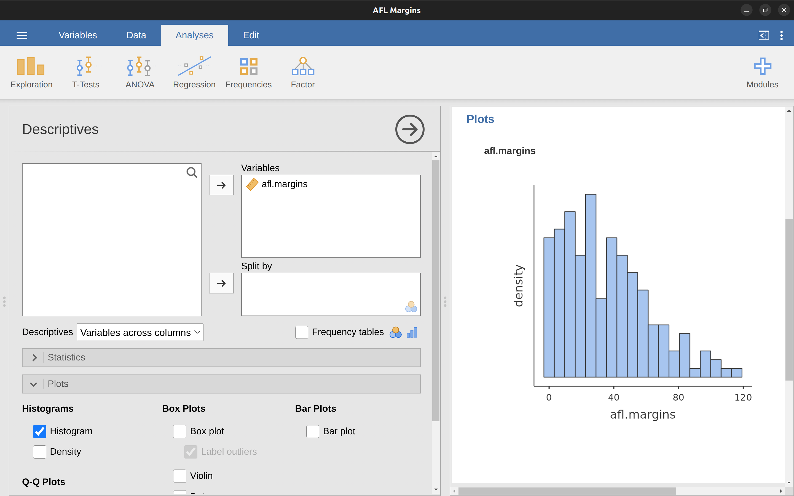
值得一提jamovi有繪製”密度”曲線的功能。只要開啟”Histogram”選項之下的”Density“方塊，並取消勾選”Histogram”，就可以得到 Figure 5.3 的作品。只要資料數值是連續的，密度曲線能將分佈趨勢視覺化。密度曲線是直方圖的變形，jamvoi採用kernel smoothing演算法繪製，原理是將資料中的雜訊平滑化，使得曲線看起來平滑。使用密度曲線判斷資料變項分佈趨勢，比直方圖更佳，因為曲線不受間值設定影響。如果這份資料只用4個間值繪製直方圖，看起來絕對和用20個間值繪製的直方圖不一樣。
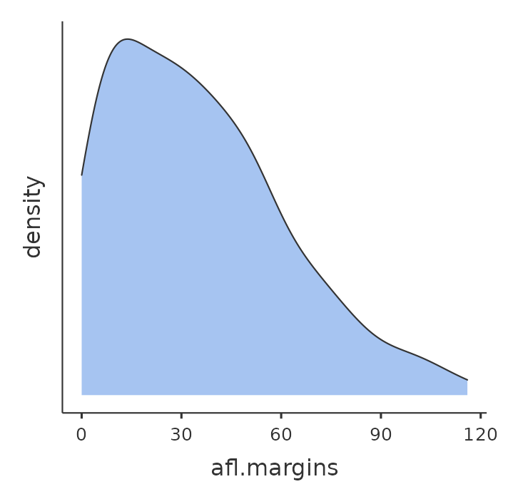
afl.margins的密度曲線。雖然這裡示範的直方圖和密度曲線還需要一些加工才能用在報告，至少已經為完善描述統計工作給出清楚方向。直方圖或密度曲線的最大用處是顯示資料的變異趨勢，讓分析者掌握資料特性。直方圖的劣勢是無法有效簡化資料訊息，本書稍後會展示將20多個直方圖塞在一張圖裡有多讓人眼花燎亂。最後請注意，直方圖不能將名義尺度資料視覺化。
5.2 箱型圖
箱型圖(boxplot)是與直方圖功能相同，適用於等距尺度或比例尺度變項的另一種資料視覺化方法，又被稱為“盒鬚圖”。箱形圖的基本概念是將變項資料的中位數、四分位數間距、以及全距用視覺標記呈現。如此簡潔的構成讓箱形圖變成最常使用的統計圖，特別是用在初步探索資料趨勢的時候。以下同樣使用afl.margins資料集做為示範。
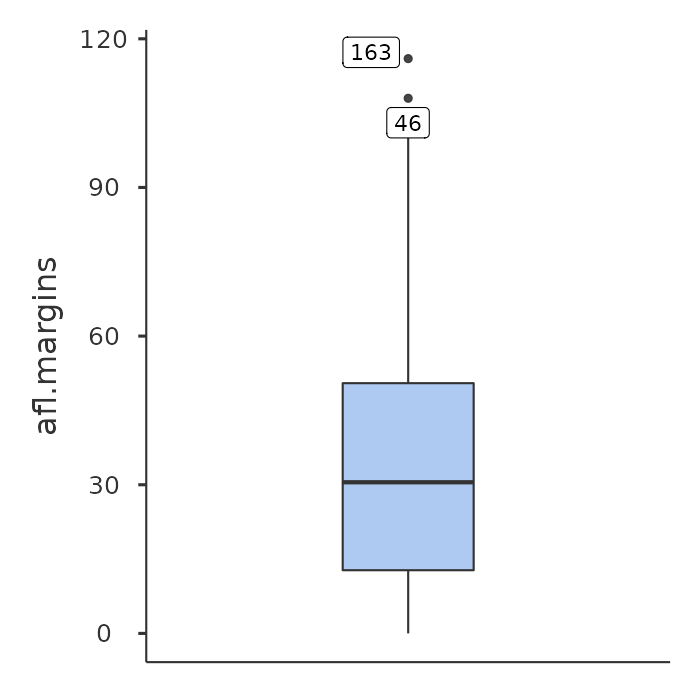
afl.margins變項的箱形圖。了解如何用箱形圖解釋資料的最簡單方式，就是親手繪製一份。與繪製直方圖一樣的步驟，只是改成勾選”Box plot”，就會在jamovi報表介面得到如 Figure 5.4 的成品。看著圖中的特徵，你能辨識出重要訊息：箱子中大的粗線是中位數；箱子的上下邊界距離是25%到75%的四分位數間距；箱子之外的”觸鬚”長度，只要不會超過“限制邊界”，就能延伸到資料的最小值及最大值。預設的限制邊界是四分位數間距的1.5倍，也就是說觸鬚向下延伸只能到25%的四分位數 減去1.5倍的四分位數間距，以及向上延伸最多到75%的四分位數加上1.5倍的四分位數間距。任何落在觸鬚或限制邊界之外的數值，一般稱為極端值(outlier)。afl.margins這筆變項有兩個極端值，因為上邊界值是107，試算表裡可以找出是第108行及第116行的數值。
5.2.1 小提琴圖
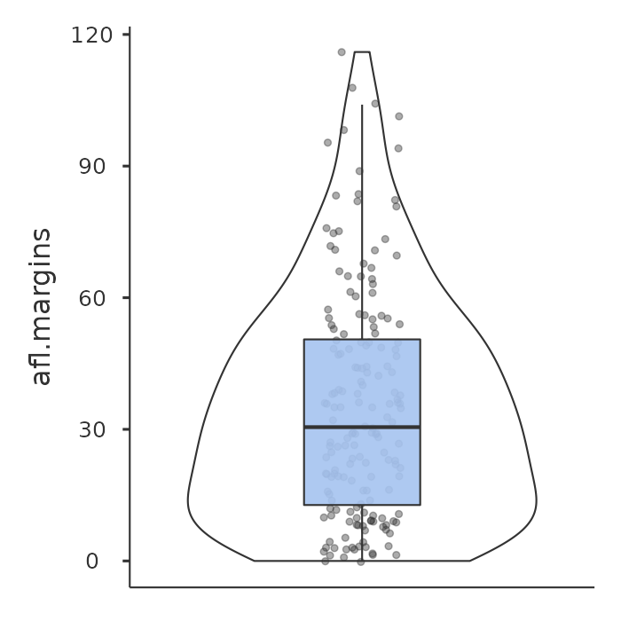
afl.margins變項的小提琴圖，同時繪製資料點與箱形圖。小提琴圖(violin plot)是傳統箱形圖的變形。小提琴圖類似箱形圖，曲線代表每個數值在整筆資料的機率密度。通常小提琴圖都要同時呈現箱形圖的主要視覺標記，包括標記中位數的粗線，以及代表四分位數間距的箱子。用jamovi完成 Figure 5.5 作品的繪製方法是只要將”Box plot”選項之下的”Violin”與”Data”都一起勾選。因為統計圖儘可能簡潔易懂，小提琴圖有太多視覺元素，原作者喜歡使用箱形圖比小提琴圖多一些。
5.2.2 使用多重箱形圖
最後，如果我們需要繪製不只一個箱形圖要怎麼做呢？像是我們要將每一年AFL勝隊得分的資料都會成一份箱形圖。首先把能達到這個目的的資料匯入jamovi，請開啟示範資料庫的”AFL Margins By Year”這份檔案。這份檔案一共有4296場比賽紀錄，還有一個變項儲存年份。要用jamovi繪製每一年勝隊得分margins的箱形圖，請依照 Figure 5.6 的示範，把變項year放到”Split by”視窗裡。
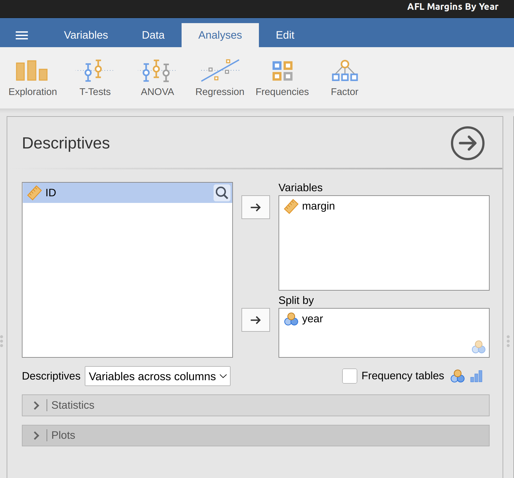
繪製成品如 Figure 5.7 。由於每一年都有一份箱形圖，比直方圖更能讓我們看到逐年趨勢，而且不會被年份的連續性干擾解讀2。如果這裡改成繪製24份直方圖，各位可以自行試試看容不容易解讀。
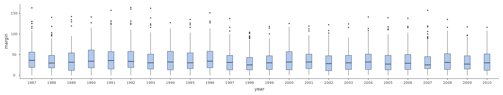
5.2.3 使用箱形圖辨認極端值
jamovi繪製箱形圖會自動標記超出限制邊界的資料點，實務上通常用繪製箱形圖偵測資料裡的極端值：泛指離多數資料遠得”可疑”的數值。我們用 Figure 5.8 的AFL勝隊得分箱形圖裡的兩個資料點來說明為何應該懷疑極端值的存在：因為這兩場勝隊得分超過300分！實在太不尋常了3。接著我們試著使用jamovi的功能，仔細檢視這兩場紀錄。只要勾選”Box Plot”選項時，一併啟動之下的”Label outliers”，jamovi就會在箱形圖標示極端值資料的在第幾列，讓我們能回到試算表介面看個仔細。另一種方式是使用jmaovi的過濾器(Filter)功能：按下主介面左下角的漏斗圖示，就會開啟如 Figure 5.9 Filter選單，接著比照該圖示範，在視窗裡輸入或複製貼上 ‘margin > 300’。
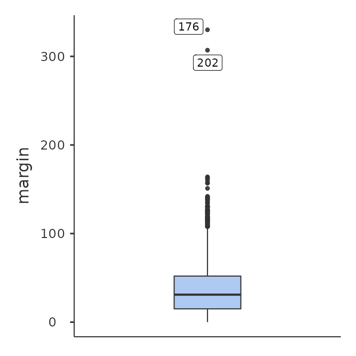
過濾器啟動後，試算面介面最左邊會多一個欄位，欄位下的細格會標記有那些資料通過稍早設定的條件。這種方法能快速辨識極端值資料在那裡。更進一步還可以開啟jamovi描述統計選單的”Frequency table”，如同 Figure 5.10 的示範。報表顯示超過300分的比賽紀錄是第14與第134場。這些資料探索能讓我們決定，是不是要回去看看資料檔案裡，這些不尋常的極端值到底是怎麼回事。
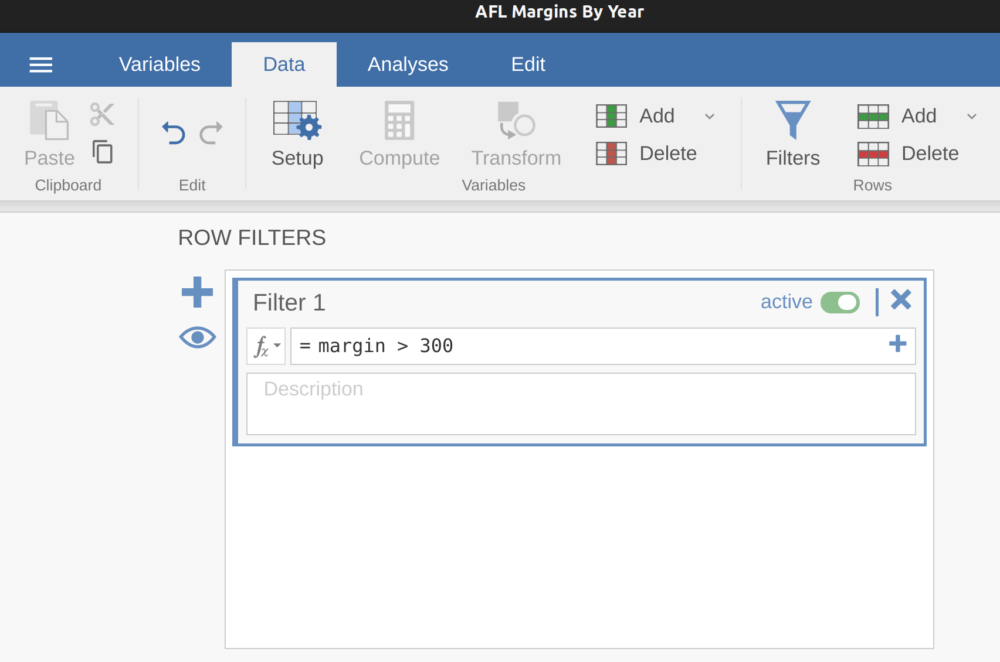
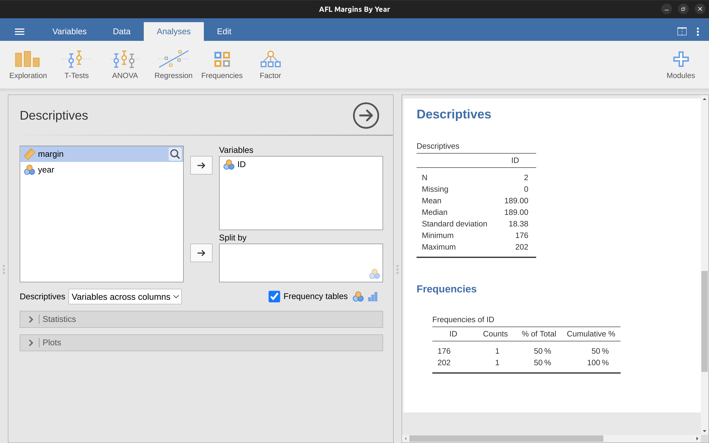
通常造常極端值的問題是登打紀錄的人手誤。雖然這是個不細心而犯的錯，但是這種事情在統計實務層出不窮。真實世界的各種資料充滿這類錯誤，尤其是透過人工輸入電腦的資料。其實實務上有個專有名詞叫「資料清理」：泛指在正式進行資料分析前，找出錯誤或可疑數值的一切工作。找出並清理原始資料裡一切輸入錯誤、遺漏值、或者各種希奇古怪問題的工作都是資料清理的項目。
至於比較沒那麼極端，但是在箱形圖裡被標為極端值的資料，要不要納入分析或排除這些數值，全看你要如何看待這筆資料，以及利用這筆資料的想法。上統計課就是自我訓練判斷如何運用這類資料的能力。若是你認為這些極端值應該納入分析，就保留它們。到了 Section 10.10 我們會繼續學習更多判斷極端值要不要保留的策略。
5.3 柱狀圖
柱狀圖(bar graph)也是同學們常見到的資料視覺化作品，主要用來展示名義尺度變項的分佈趨勢。我們用 Section 4.1.6 這一節示範眾數的資料變項afl.finalists，來示範如何繪製。只要將出現在變項裡的隊名擺在x軸，再將每一隊打入季後賽的次數繪製成對應高度的柱子就完成了。這筆資料有很多隊伍，我們只抓四支隊伍做個示範，他們是Brisbane, Carlton, Fremantle 以及 Richmond。請同學先點選主介面左下角的漏斗圖示，開啟jamovi的Filters功能選單，複製下列視窗內的所有文字與符號(點一下視窗右側的圖示即可複製)，再貼到Filters選單對話視窗的”=“之後，關閉選單即可生效4。
afl.finalists == 'Brisbane' or afl.finalists == 'Carlton' or afl.finalists == 'Fremantle' or afl.finalists == 'Richmond'在試算表介面你會看到有的數值被反白，代表該項資料已經被過濾了。接著照舊開啟描述統計模組選單，這次勾選Bar plot選項(請記得變項要放到Variables視窗)，就會看到如 Figure 5.11 的柱狀圖成品。
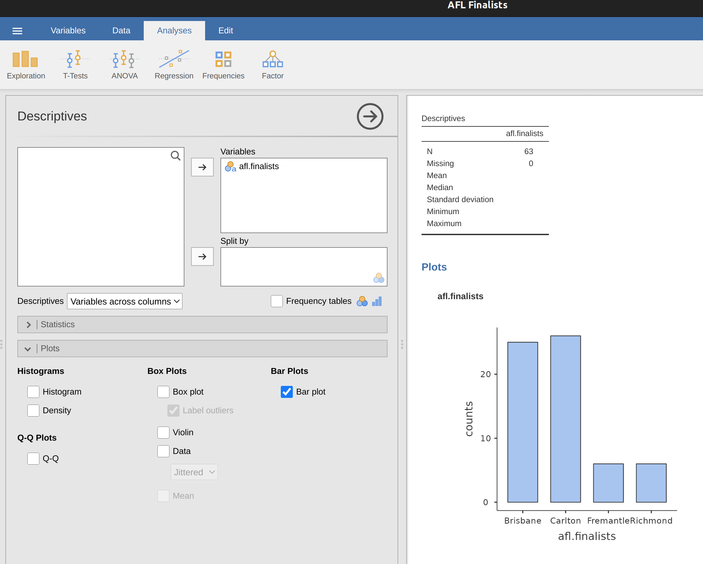
5.4 匯出統計圖
快要下課了，不過認真的同學應該會想問：如果我很滿意用jamovi畫出來的統計圖，想要存起來分享給朋友看的話，難道他們也要有jamovi才看得到嗎？可以只將統計圖單獨存檔嗎？很簡單，在你想存檔的統計圖上按一下滑鼠右鍵，就會出現匯出存檔選單，你可以選擇要存檔的格式，目前有’png’，‘eps’，‘svg’，’pdf’等可以選擇。只要存成你覺得合適的圖檔格式，就可以用電子郵件或社交軟體分享給朋友，或者將圖檔放到你的作業報告裡。
5.5 本章小結
本書原作者自敘個人寫作學術報告的習慣，都是從思考要放什麼圖開始。因為每個人都對搭配有敘事順序的圖畫故事有興趣，想清楚要放什麼圖，報告的其他部分都是點綴。因為人類天生會用眼睛探索世界的傾向，統計圖也是一種分析資料的工具。佈局精密的統計圖能幫助讀者從海量資訊裡立刻看到關鍵，也就是許多人都聽過的「一圖抵萬言」。希望讀過並操作過本章範例的同學，能將這個想法記在心裡。本章涵蓋的主題有：
最後提醒一點。jamovi(還有大多數套裝軟體)輸出的統計圖都是最基本的樣式，不一定符合報告呈現的需要。如果有心製作報告需要的統計圖，建議學習使用R語言及製作統計圖的套件。最多R語言使用者喜歡用ggplot2，有許多參考資源可以拿來自我學習及參照(例如 Wilkinson et al., 2006)。不過如果你還是統計初學者，你需要先花些時間掌握R語法。本書不會談到R語言，當你認為有必要使用時，可以運用本書的範例，做為學習R的入門資源(請記得jamovi有R程式碼模式)。